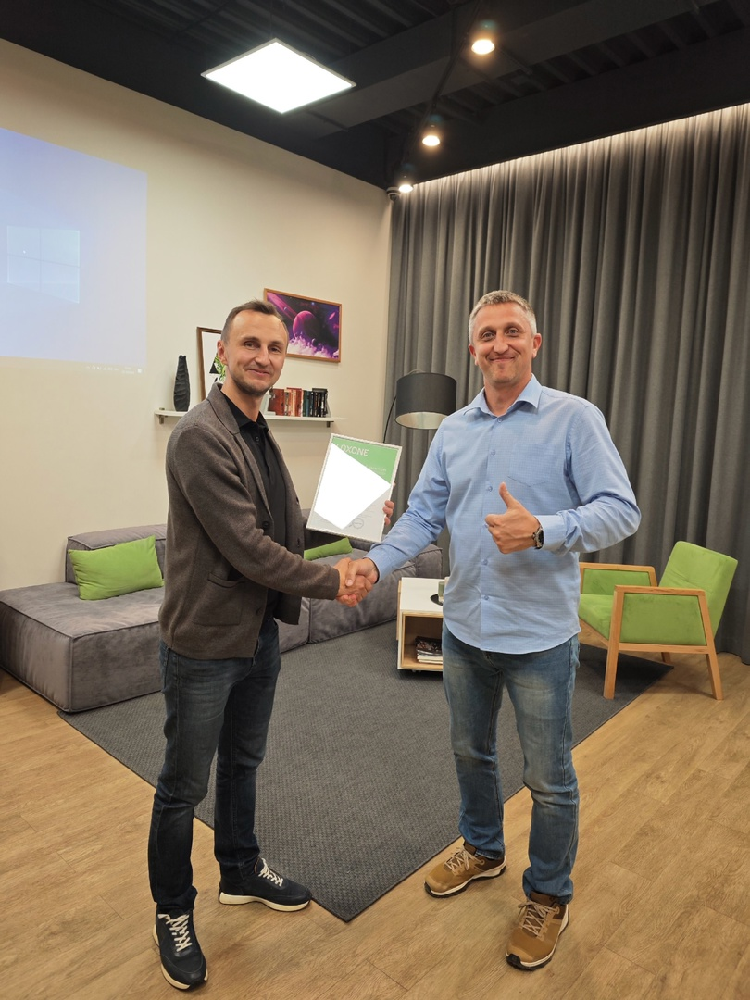
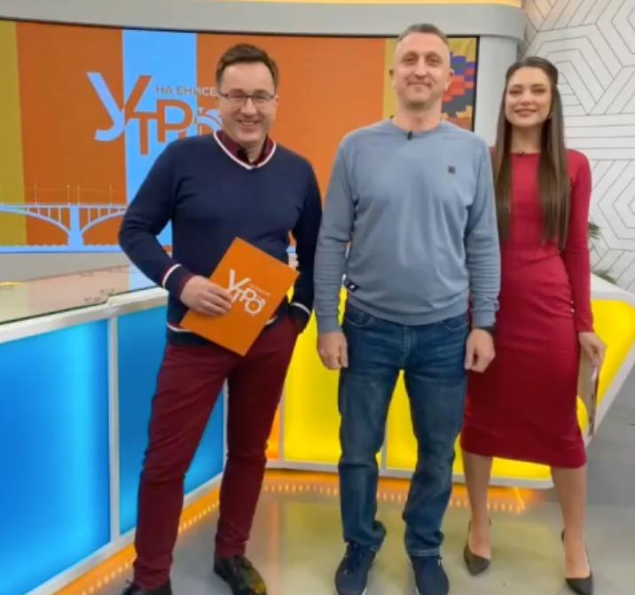

Благодаря курсу я начал привлекать крупных заказчиков с высокими бюджетами, что позволило существенно увеличить доходы и купить квартиру, установить в ней умный дом. Сейчас фокус на создании качественного контента и участии в тематических мероприятиях. Недавно был в программе "Утро на Енисее" в прямом эфире!
Полное интервью Дмитрия Десюкова, электрика из Красноярска, читайте в этой статье.
Мы взяли у него короткое интервью:
— В начале расскажи, что было до курса, какой средний доход был в месяц? Сколько клиентов?
— Хорошо. Доход варьировался от 50 до 100 тысяч в месяц. Все было нестабильно. Приходилось крутиться как белка, чтобы найти клиентов. Количество по-разному, невозможно определить. Так как есть быстрые заказы по мелочи. А может быть 1 на несколько месяцев.
— Какие сложности были во время обучения на нашем курсе? Насколько сложно было учиться? За сколько прошёл обучение?
— Обучение не сложное, всё понятно. Есть четкий алгоритм действий. Можно сказать инструкция. Обучение не прошёл до конца, тк когда ВК начало штормить, решил подождать пока успокоится.
— И ты у нас человек самостоятельный, поэтому проходил курс без куратора, верно? По итогу хоть половину уроков пробежал?
— С куратором. Потом началась чехорда и время куратора закончилось. И процесс встал, в принципе. Прошёл 8 или 9 уроков. Что уже дало свои плоды)
— Какие сейчас действия делаешь для привлечения клиентов? Как часто пишешь посты? Запускаешь ли рекламу?
— Вк, Ютуб, Телега. В основном видеоролики. Рекламу не запускал, не добрался до неё. Да и нет необходимости уже)

Езжу на разные мероприятия по теме Умного дома. Снимаю обзоры о них. И о людях интересных, которые там принимают участие. Новые продукты, новые технологии и чем они полезны зрителям.
Есть обзоры на инструменты.
Посты пишу по вдохновению, какого-то строгого плана нет. Есть что сказать, снимаю.
— А можешь поделиться, как изменилась жизнь, когда увеличился доход? Может что-то купил себе? Съездил в путешествие? Что-то смог сделать, чего раньше не мог позволить себе)
— Купил квартиру, сделал в ней полноценный Умный дом и хороший ремонт. Отдых по расписанию)
— Офигеть, конечно, я очень рада за тебя)) Всё, остался последний вопрос, сколько сейчас зарабатываешь? Сколько в среднем в месяц? Сколько клиентов? А вот примерно сколько за год было прошедший заработано?
— В моём деле количество клиентов не имеет большого значения. Но имеет значение величина проекта. Сейчас не беру мелочевку.
Доход увеличился значительно. Стали появляться крупные заказы, на приличные деньги. С высокой долей ответственности, но и соответствующей оплатой.
Я не впишусь в стандарт типичного ремесленника. Где количество клиентов = прибыли.
Может быть 1 заказ на пол года или год. Несколько таких проектов идут параллельно.
Так скажем, уровень проектов растёт и по объему и по оплате. Как и сама индустрия систем домашней автоматизации. И речь тут о сотнях тысяч за проект)

— Это круто, спасибо тебе большое за ответы и участие! Пожелаешь что-нибудь новым ученикам и сомневающимся?
— Спасибо вам за вопросы :)
Ученикам просто следовать урокам и инструкциям.
Вот просто делать и не париться. Это кайфово, это новый взгляд на жизнь, а не только продвижение ВК.
Всем кто сомневается, особо сказать нечего. Это ваши сомнения и ваша жизнь. Вы можете просто взять и изменить её, как я.
Или продолжать ссать в тапки и жаловаться.
Этот курс не обещает поменять ни вас, ни ваше мировоззрение. Это ведь курс как продвигать свои услуги :) Но если вы начнёте реально что-то делать, а не только думать об этом, то очень многое может измениться в вашей жизни. Но это не точно :)
Хотя раз ты уже увидел этот курс, значит что-то уже произошло, разве нет?
— Спасибо, мега-круто было с тобой пообщаться))